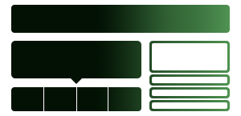

Introducing Bootstrap.

By nerds, for nerds.
Forked from Twitter Bootstrap, built by todc, TODC Bootstrap utilizes LESS CSS, is compiled via Node, and is managed through GitHub to help nerds do awesome stuff on the web.

Made for everyone.
Bootstrap 3 has been rebuilt from the ground up to push the Web forward. It looks and behaves great on the latest smartphones, tablets, and desktops (including support for IE8+).

Packed with features.
A 12-column responsive grid, dozens of components, JavaScript plugins, typography, form controls, and even a web-based Customizer to make Bootstrap your own.
Built with Bootstrap.